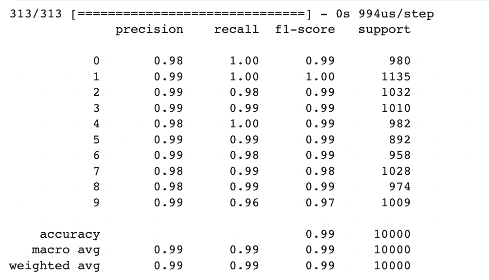

Modified National Institute of Standards and Technology Database Project
Introduction
The MNIST project stands as a cornerstone in the realm of machine learning and computer vision. It revolves around the formidable task of classifying handwritten digits, employing the extensive MNIST dataset—a trove of labeled images capturing diverse handwritten representations of numbers ranging from 0 to 9.
The project's primary objective is to devise a machine learning model that can achieve precise recognition and classification of these handwritten digits. Through training a neural network on the MNIST dataset, the aim is to construct a model that possesses the ability to generalize effectively, accurately classifying previously unseen handwritten digits.
The significance of the MNIST project extends beyond its immediate application in digit classification. It serves as a benchmark for evaluating the efficacy of various machine learning algorithms and neural network architectures. As one of the most widely recognized and frequently studied tasks in the field, MNIST offers a standardized platform for comparing and advancing the capabilities of different models and techniques.
Data Description
The MNIST dataset itself is a compilation of 60,000 training images and 10,000 testing images, each with a resolution of 28x28 pixels. These images represent grayscale renderings of handwritten digits, captured from a diverse set of sources. The dataset's large size and meticulous labeling make it an ideal resource for training and evaluating machine learning models.
Convolutional Neural Network Model
I created a Convolutional Neural Network (CNN) model using the Keras library in Python to achieve high accuracy on the MNIST dataset. The model architecture consists of multiple layers:
- Conv2D: Convolutional layer with specified filters, kernel size, and activation function. It extracts features from input images.
- MaxPooling2D: Performs max pooling to downsample the feature maps, reducing the spatial dimensions.
- Flatten: Flattens the multi-dimensional feature maps into a one-dimensional vector, preparing for the fully connected layers
- Dense: Fully connected layers that learn complex patterns and make predictions. The output layer uses the softmax activation function to produce probability scores for each digit class.

I achieved an accuracy of 99% on the MNIST dataset using the CNN model. By leveraging the power of convolutional layers for feature extraction and the fully connected layers for classification, the model demonstrates a strong ability to accurately classify handwritten digits.
This high level of accuracy is a testament to the effectiveness of the chosen architecture and the successful training process. It indicates that the model has learned intricate patterns and representations from the training data, allowing it to generalize well and accurately classify previously unseen handwritten digits.